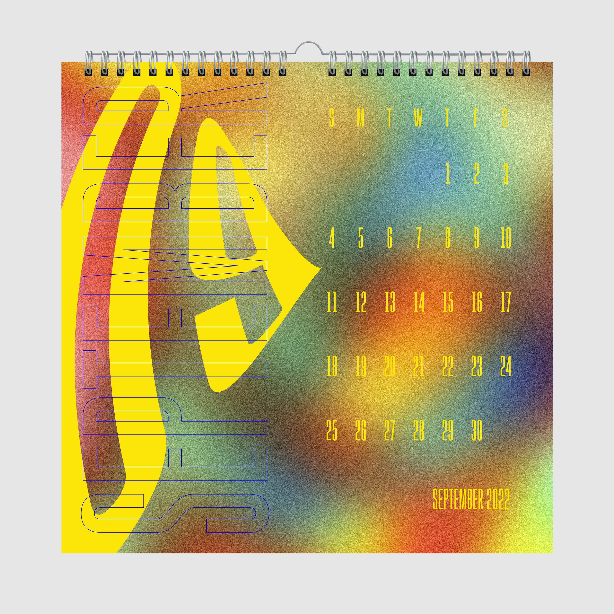
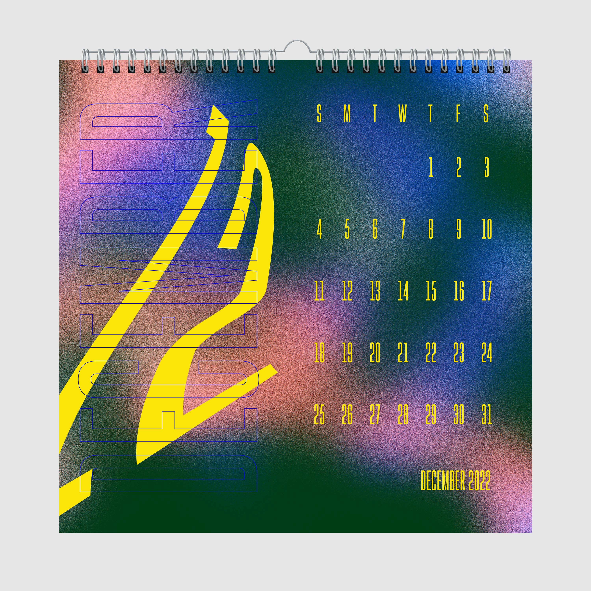

Gradients 2022 Calendar
A 12 month calendar with a gradient and warped text theme.
This 12 month calendar’s theme was inspired by the Wacky PoMo style of design of the 90’s through the early 2000’s. The warped shapes, primary colors, and cartoonish style of Wacky PoMo have been modernized into a colorful gradient space of floating warped numbers next to the simple layout of each day of the month.
16"x16" Created With Photoshop & Illustrator



